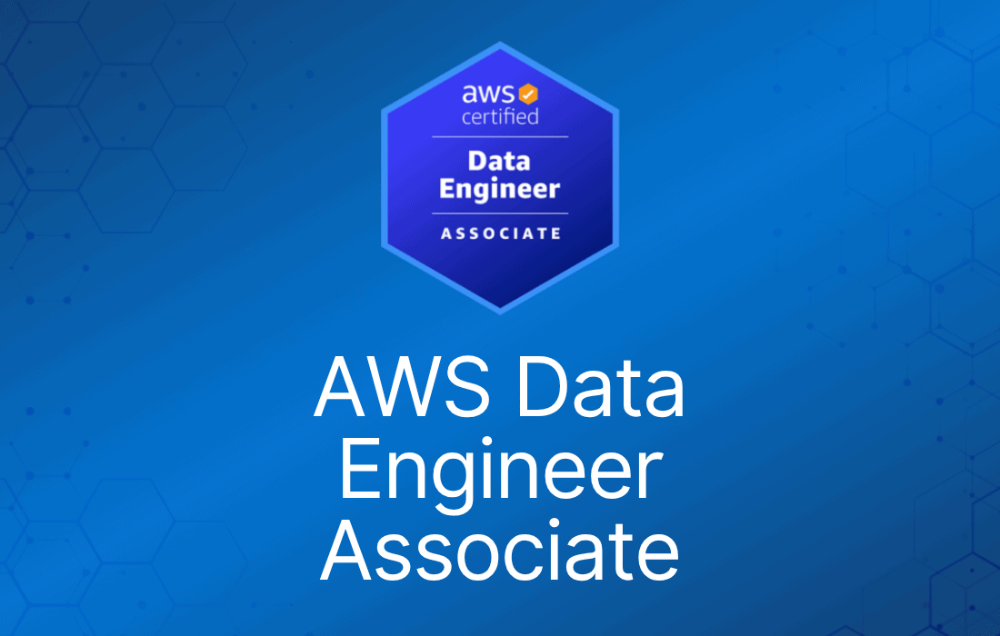

备考 AWS Certified Data Engineer Associate（DEA-C01）需要深入理解 AWS 服务和数据工程原理。考试对 AWS 服务的考查既广，某些部分也有一定深度。要通过这门有挑战性的考试，你需要扎实的数据工程实践经验。
这份针对 AWS Certified Data Engineer Associate 考试的 AWS cheat sheet，汇总了每项 AWS 服务在考试中需要掌握的核心知识点。配合我们的模拟题使用，这些知识能让你在考试当天占据优势。
Compute（计算）
在这份 AWS Certified Data Engineer Associate（DEA-C01）考试 cheat sheet 的 Compute 部分，我们深入介绍考试中必不可少的关键 AWS 计算服务。
本部分提供 Amazon EC2、Amazon ECS/EKS 等服务的关键要点和知识，它们是 AWS 上数据工程的基础。
理解这些计算服务对攻克 DEA-C01 考试至关重要，因为它们构成了 AWS 生态中许多数据处理和分析方案的骨干。
Amazon EC2（Elastic Compute Cloud）：
- EC2 实例：Amazon EC2 在云中提供可调整大小的计算容量，让你可以按需启动虚拟服务器（实例）。
- 实例类型：EC2 提供多种针对不同使用场景优化的实例类型，如计算优化、内存优化和存储优化实例。
- Elastic Block Store（EBS）：EC2 实例使用 EBS 卷做持久化存储。EBS 卷有多种类型，如 General Purpose（SSD）、Provisioned IOPS（SSD）和 Magnetic。
- Security Group：充当 EC2 实例的虚拟防火墙，在实例级别控制入站和出站流量。
- Elastic IP 地址：为动态云计算设计的静态 IP 地址，可以分配并绑定到 EC2 实例。
- Key Pair：EC2 使用公钥加密技术加密和解密登录信息。登录实例前必须创建 key pair。
- Amazon Machine Image（AMI）：AMI 是包含启动 EC2 实例所需软件配置（操作系统、应用服务器、应用）的模板。
- Instance Store 卷：为部分 EC2 实例提供临时块级存储。实例停止或终止后，instance store 卷上的数据会丢失。
- Auto Scaling：该功能允许你根据自定义条件自动扩缩 EC2 容量。
- Elastic Load Balancing（ELB）：ELB 自动将传入的应用流量分发到多个 EC2 实例，提升应用的可扩展性和可靠性。
- 定价模式：EC2 提供多种定价选项，包括 On-Demand、Reserved Instance 和 Spot Instance，分别对应不同的业务需求和成本优化策略。
- VPC 集成：EC2 实例在 Virtual Private Cloud（VPC）中启动，实现网络隔离并连接到你自己的网络。
- 监控与日志：与 Amazon CloudWatch 集成，可监控 EC2 实例性能，提供 CPU 利用率、磁盘 I/O、网络用量等指标。
- EC2 实例生命周期：理解 EC2 实例生命周期的各个阶段，包括启动（launch）、开机（start）、停止（stop）、重启（reboot）和终止（terminate）。
- AMI 定制：可以从现有实例创建自定义 AMI，用于启动带有预配置设置的新实例。
Amazon Elastic Kubernetes Service（Amazon EKS）：
- EKS 概览：Amazon EKS 是一项托管服务，让你无需安装、运维和维护自己的 Kubernetes 控制平面或节点，即可在 AWS 上运行 Kubernetes。
- Kubernetes 集群：EKS 跨多个可用区运行 Kubernetes 控制平面实例，确保高可用。它会自动检测并替换不健康的控制平面实例，并提供自动版本升级。
- 与 AWS 服务集成：EKS 与 Elastic Load Balancing（分发流量）、IAM（身份认证）和 Amazon VPC（网络）等 AWS 服务集成。
- Worker 节点管理：EKS 管理 Kubernetes 控制平面，而运行应用的 worker 节点由用户负责管理。这些节点可以是 EC2 实例或 AWS Fargate。
- EKS 与 Fargate：AWS Fargate 是配合 EKS 使用的 serverless 容器计算引擎。Fargate 免除了预配置和管理服务器的需要，你只需为运行容器所需的资源付费。
- EKS 中的网络：EKS 可与 Amazon VPC 集成，将集群隔离在你自己的网络中，并连接现有服务或资源。
- 负载均衡：EKS 支持 Elastic Load Balancing（ELB），自动将传入应用流量分发到多个目标（如 EC2 实例）。
- 安全：EKS 与 AWS IAM 集成，提供对 AWS 资源的细粒度控制。可使用 security group 控制进出 worker 节点实例的流量。
- 日志与监控：EKS 与 Amazon CloudWatch 和 AWS CloudTrail 集成进行日志和监控。CloudWatch 收集并跟踪指标、收集和监控日志文件，并可设置告警。
- 持久化存储：EKS 支持使用 Amazon EBS 和 Amazon EFS 为 Kubernetes pod 提供持久化存储。
- 可扩展性：EKS 支持 horizontal pod autoscaling 和 cluster autoscaling。Horizontal Pod Autoscaler 自动调整 pod 数量，Cluster Autoscaler 调整节点数量。
- Kubernetes API 兼容性：EKS 提供全托管的 Kubernetes API server，你可以用现有工具和工作流与之交互。
- EKS 控制台：AWS 为 EKS 提供管理控制台，简化集群的创建、更新和删除。
- EKS 定价：EKS 按 Kubernetes 控制平面运行的小时数计费，无最低费用或预付承诺。
Amazon Elastic Container Service（Amazon ECS）：
- ECS 概览：Amazon ECS 是一项全托管的容器编排服务，让你可以轻松部署、管理和扩展使用 Docker 的容器化应用。
- 容器定义与任务定义：在 ECS 中，容器定义是任务定义（task definition）的一部分，指定如何运行 Docker 容器，包括 CPU 和内存分配、环境变量和网络设置。
- ECS 任务与服务：任务（task）是任务定义在集群中的实例化。ECS service 允许你同时运行并维持指定数量的任务定义实例。
- 集群管理：ECS 集群是任务或服务的逻辑分组。ECS 可以运行在由 AWS Fargate 管理的 serverless 基础设施上，也可以运行在你自己管理的 EC2 实例集群上。
- 与 AWS Fargate 集成：AWS Fargate 是 serverless 容器计算引擎，无需预配置和管理服务器。使用 Fargate，你按应用指定资源并付费。
- 网络与负载均衡：ECS 可与 Amazon VPC 集成，为容器化应用提供隔离；也支持 Elastic Load Balancing（ELB）分发传入流量。
- EBS 与 EFS 存储：ECS 任务可以使用 EBS 卷做持久化存储，数据在单个任务结束后仍然保留。ECS 还可与 EFS 集成，在多个任务间共享存储。
- 任务的 IAM Role：ECS 任务可以关联 IAM role，让每个任务拥有特定权限。
- 日志与监控：ECS 与 Amazon CloudWatch 集成进行日志和监控。CloudWatch Logs 可收集和存储容器日志，CloudWatch 指标可监控资源利用率。
- ECS 调度与编排：ECS 内置调度器，可根据资源需求和其他要求运行容器，也支持与第三方调度器集成。
- 服务发现：ECS 支持服务发现（service discovery），让容器化服务之间可以轻松发现并互相连接。
- ECS 安全：ECS 的安全包括保护容器实例、通过 IAM 管理对 ECS 资源的访问，以及用 security group 和 network ACL 控制网络流量。
- ECS 定价：ECS 按你使用的资源计费，如 EC2 实例或 Fargate 计算资源。ECS 本身不额外收费。
- Container Agent：ECS 在集群中每个容器实例上运行一个 container agent。agent 向 ECS 上报资源当前运行的任务和资源利用率信息。
Storage（存储）
在这份 AWS Certified Data Engineer Associate（DEA-C01）考试 cheat sheet 的 Storage 部分，我们聚焦 Amazon S3、S3 Select、Glacier 和 EBS——这些都是数据工程必备的关键 AWS 存储服务。
本部分详细介绍用于对象存储的 Amazon S3、用于高效数据查询的 S3 Select、用于长期归档的 Glacier，以及用于块级存储的 EBS。
理解这些服务的功能、使用场景和最佳实践，对 DEA-C01 考试至关重要，因为它们是在 AWS 上设计和实现高效、可扩展且经济存储方案的基础。
Amazon S3（Simple Storage Service）：
- S3 概览：Amazon S3（Simple Storage Service）是一项对象存储服务，提供可扩展性、数据可用性、安全性和高性能。
- Bucket 与 Object：S3 以对象（object）形式将数据存储在 bucket 中。bucket 是 Amazon S3 中存放对象的容器。
- S3 数据一致性模型：Amazon S3 对新对象的 PUT 提供强写后读一致性，对覆盖性 PUT 和 DELETE 提供最终一致性。
- 存储类别：S3 提供多种面向不同使用场景的存储类别，包括 S3 Standard、S3 Intelligent-Tiering、S3 Standard-IA（Infrequent Access）、S3 One Zone-IA 和 S3 Glacier。
- S3 Glacier：S3 Glacier 是用于数据归档的安全、持久、低成本存储类别。取回时间从几分钟到几小时不等。
- S3 Select：该功能允许使用简单的 SQL 表达式只取回对象中的部分数据。S3 Select 通过只从 S3 对象中检索所需数据来提升应用性能。
- 版本控制（Versioning）：S3 支持版本控制，可在同一 bucket 中保存对象的多个版本。
- 生命周期策略：生命周期策略可自动在不同存储层之间移动对象，也可用于在对象生命周期结束时将其过期删除。
- 安全与加密：S3 为静态数据和传输中数据提供多种加密选项，并与 AWS Identity and Access Management（IAM）集成实现安全的访问控制。
- 性能优化：multipart upload、S3 Transfer Acceleration、byte-range fetch 等技术可以优化 S3 性能。
- 数据复制：S3 提供跨区域复制（CRR）和同区域复制（SRR），用于跨 bucket 复制对象。
- 事件通知：当 bucket 中发生指定事件时，S3 可以发送通知，进而触发工作流、告警或其他处理。
- 访问管理：S3 提供多种访问管理机制，包括 bucket policy、ACL（Access Control List）和 Query String Authentication。
- S3 分析与监控：与 Amazon CloudWatch 和 S3 Storage Class Analysis 工具集成，帮助监控和分析存储用量。
- S3 定价：费用基于存储用量、请求次数、数据传输，以及 S3 Select、Glacier 取回等附加功能。
Amazon EBS（Elastic Block Store）：
- EBS 概览：Amazon EBS 为 Amazon EC2 实例提供块级存储卷。EBS 卷是高可用、可靠的存储卷，可挂载到同一可用区内任何运行中的实例。
- 卷类型：EBS 提供面向不同需求的多种卷类型，如 General Purpose（SSD）、Provisioned IOPS（SSD）和 Magnetic。每种类型的性能特征和成本各不相同。
- 数据持久性与可用性：EBS 卷专为高持久性设计，通过在同一可用区内复制来抵御故障。
- 快照（Snapshot）：EBS 允许你创建卷的快照（备份），快照存储在 Amazon S3 中，可用于数据恢复和创建新卷。
- 加密：EBS 支持使用 AWS Key Management Service（KMS）加密卷和快照，保障数据安全。
- 性能指标：理解 IOPS（每秒输入/输出操作数）和吞吐量等 EBS 性能指标，对优化存储性能至关重要。
- 可扩展性与灵活性：EBS 卷可以轻松调整大小，性能也可根据工作负载需求随时变更。
- EBS 优化实例：某些 EC2 实例是 EBS 优化的，为 EBS 卷提供专用带宽，这对高性能工作负载非常重要。
- 生命周期管理：了解 EBS 卷从创建到删除的生命周期及其对 EC2 实例的影响很重要。
- 成本管理：理解 EBS 的定价模型（包括卷类型和快照存储成本），是构建经济高效方案的关键。
- 与 EC2 集成：EBS 与 EC2 紧密集成，理解二者如何协同工作是在 AWS 上做好数据工程的必备知识。
- 使用场景：EBS 常用于数据库、文件系统，以及任何需要文件系统或直接块级存储访问的应用。
- 数据传输：EBS 与 EC2 之间的数据传输是关键概念，尤其涉及性能和成本。
- EBS 与高可用：在高可用配置中使用 EBS 的策略，如配合 EC2 Auto Scaling、跨多个可用区。
- 灾难恢复：使用 EBS 快照进行灾难恢复，并理解从快照恢复数据的过程。
Networking（网络）
在这份 AWS Certified Data Engineer Associate（DEA-C01）考试 cheat sheet 的 Networking 部分，我们深入探讨 Amazon Virtual Private Cloud（VPC）、AWS Direct Connect 和 AWS Transit Gateway 的细节。
本部分旨在加深你对 AWS 网络服务的理解，这些服务对构建安全、可扩展、高效的网络架构至关重要。掌握用于隔离云资源的 VPC、用于专用网络连接的 Direct Connect，以及用于网络扩展和互联的 Transit Gateway，是 DEA-C01 考试的必备内容。
这些服务构成了 AWS 网络管理和优化的骨干，对任何数据工程方案都至关重要。
Amazon VPC（Virtual Private Cloud）：
- VPC 概览：Amazon VPC 允许你在 AWS Cloud 中预配置一个逻辑隔离的区域，在你自己定义的虚拟网络中启动 AWS 资源。
- Subnet：VPC 可以划分为多个 subnet，subnet 是 VPC IP 地址范围的子集。subnet 可以是公有的（可直接访问互联网）或私有的（不能直接访问）。
- Internet Gateway（IGW）：要允许 VPC 访问互联网或被互联网访问，必须挂载 Internet Gateway。
- Route Table：定义称为路由（route）的规则，决定来自 subnet 或网关的网络流量被导向何处。
- Network Access Control List（NACL）：在 subnet 级别控制流量的无状态防火墙，可基于 IP 协议、端口号和源/目的 IP 允许或拒绝流量。
- Security Group：充当 EC2 实例的虚拟防火墙，在实例级别控制入站和出站流量。
- VPC Peering：允许通过私有 IP 地址以直接网络路由将一个 VPC 与另一个 VPC 互联。
- NAT 设备：网络地址转换（NAT）设备让私有 subnet 中的实例能够连接互联网或其他 AWS 服务，同时阻止互联网主动发起与这些实例的连接。
- Elastic IP 地址：为动态云计算设计的静态 IPv4 地址，可关联到 VPC 中的实例或网络接口。
- Virtual Private Gateway（VPG）与 VPN 连接：VPG 是 VPN 连接在 Amazon 一侧的 VPN 集中器，VPN 连接将你的 VPC 与你自己的网络连接起来。
- Direct Connect：AWS Direct Connect 绕过互联网，在你的网络与 AWS 之间建立专用连接，可带来更稳定的网络体验。
- Endpoint Service：VPC Endpoint Service 允许你将自己 VPC 中的服务暴露给其他 AWS 账户。
- Flow Log：捕获进出 VPC 中网络接口的 IP 流量信息，可用于网络监控、取证和安全分析。
- VPC 定价：创建和使用 VPC 本身不额外收费。收费项是你在 VPC 中创建的 AWS 资源和数据传输。
AWS Direct Connect：
- Direct Connect 概览：AWS Direct Connect 是一种云服务方案，让你可以轻松建立从你的机房到 AWS 的专用网络连接。
- 私有连接：它在你的数据中心与 AWS 之间提供私有、专用的网络连接，绕过公共互联网。
- 降低带宽成本：使用 AWS Direct Connect 可以降低网络成本、提升带宽吞吐，并提供比互联网连接更稳定的网络体验。
- 连接选项：AWS Direct Connect 提供不同的连接速率，从 50 Mbps 到 100 Gbps。
- Virtual Interface（VIF）：你可以创建直连 AWS 公共服务（Public VIF）或 VPC 内资源（Private VIF）的虚拟接口。
- 数据传输：AWS Direct Connect 改变 AWS 服务的数据传输费率，通常比互联网费率的数据传输成本更低。
- Direct Connect Gateway：允许你用同一条 AWS Direct Connect 连接，接入不同 AWS region 的多个 VPC。
- 合作伙伴网络：AWS Direct Connect 可以通过 AWS 合作伙伴搭建，他们能帮你建立你的网络与 AWS 之间的物理连接。
- 混合环境：非常适合混合云架构，为需要更高带宽或更低延迟的工作负载提供安全可靠的 AWS 连接。
- 稳定的性能：相比互联网，提供更稳定的网络性能和更低的延迟。
- 数据隐私：由于流量不经过公共互联网，可为数据提供更高水平的安全与隐私。
- 弹性与冗余：为增强弹性，你可以建立多条 Direct Connect 连接实现冗余。
- 使用场景：常用于大容量数据传输，如大规模迁移、实时数据馈送和混合云架构。
- 定价模型：按端口速率和数据传输量定价。无最低承诺或长期合同要求。
AWS Transit Gateway：
- Transit Gateway 概览：AWS Transit Gateway 充当网络中转枢纽，让你通过一个中心管理点连接多个 VPC 和本地网络。
- 简化网络架构：通过减少所需的 peering 连接数量并集中管理，简化网络架构。
- 跨 Region Peering：Transit Gateway 支持跨不同 AWS Region 的 peering 连接，助力构建全球化网络架构。
- 与 Direct Connect 集成：可与 AWS Direct Connect 集成，为云端和本地环境提供统一的网络接口。
- 路由与分段：提供用于网络分段和流量管理的高级路由功能，同时支持静态和动态路由。
- 集中管理：为所有网络流量提供单一网关，简化 VPC 间及 VPC 与本地网络之间连接的管理与监控。
- 可扩展性：AWS Transit Gateway 设计为可水平扩展，能随 AWS 环境增长处理不断增加的网络流量。
- 安全与合规：通过提供统一的安全策略执行点和网络分段，增强网络安全与合规。
- 经济高效：通过降低网络拓扑复杂度、减少 peering 连接数量，降低总体运维成本。
- VPN 支持：支持 VPN 连接，实现本地网络与 AWS 云之间的安全互联。
- 组播支持：Transit Gateway 支持组播路由，适用于需要同时向多个目的地发送相同内容的应用。
- 高可用与弹性：专为高可用与弹性设计，可随网络流量增长自动扩展。
- Flow Log：支持 Transit Gateway 的 VPC Flow Log，可捕获进出 Transit Gateway 网络接口的 IP 流量信息。
- 定价模型：按通过 Transit Gateway 处理的数据量和连接数计费。
Serverless
在这份 AWS Certified Data Engineer Associate（DEA-C01）考试 cheat sheet 的 Serverless 部分，我们深入探讨 Amazon Virtual Private Cloud（VPC）、AWS Direct Connect 和 AWS Transit Gateway 的细节。
本部分旨在加深你对 AWS 网络服务的理解，这些服务对构建安全、可扩展、高效的网络架构至关重要。
掌握用于隔离云资源的 VPC、用于专用网络连接的 Direct Connect，以及用于网络扩展和互联的 Transit Gateway，是 DEA-C01 考试的必备内容。
这些服务构成了 AWS 网络管理和优化的骨干，对任何数据工程方案都至关重要。
AWS Lambda：
- Lambda 概览：AWS Lambda 是一项 serverless 计算服务，让你无需预配置或管理服务器、无需编写工作负载感知的集群扩缩逻辑、无需维护事件集成或管理运行时，即可运行代码。
- 事件驱动架构：Lambda 函数被设计为由 S3、DynamoDB、Kinesis、SNS、SQS 等 AWS 服务触发，是事件驱动架构的关键组件。
- 扩展：AWS Lambda 通过响应每个触发事件运行代码来自动扩展应用。代码并行运行，独立处理每个触发事件，随工作负载规模精确伸缩。
- 无状态：Lambda 函数是无状态的，即调用之间不保留任何状态。如需状态管理，要使用 S3 或 DynamoDB 等外部服务。
- 支持的语言：Lambda 支持多种编程语言，包括 Node.js、Python、Ruby、Java、Go、.NET Core 和自定义运行时。
- 时间限制：Lambda 函数有最长执行时间限制，截至最新更新为 15 分钟。
- 资源分配：你可以按 64MB 步长为 Lambda 函数分配内存，最大 10GB，CPU 算力随内存按比例分配。
- 定价：Lambda 按函数的请求次数和代码执行时长计费。
- 与 AWS 服务集成：Lambda 可与多种 AWS 服务集成，用于日志（CloudWatch）、监控（X-Ray）和安全（IAM、VPC）。
- 部署包：Lambda 代码可以 ZIP 文件或容器镜像的形式部署。
- 版本与别名：Lambda 支持函数版本控制。你可以使用别名（alias）在不同版本之间路由流量。
- 环境变量：Lambda 允许为函数设置环境变量，可用于存储配置项和密钥。
- 冷启动：理解冷启动（cold start）的概念——为响应事件而创建函数的新实例——以及相应的缓解策略。
- 并发与限流：AWS Lambda 有并发上限，可管理和配置。达到上限时可能发生限流（throttling）。
- 安全：Lambda 函数默认在 VPC 内运行，你也可以将其配置为访问你自己 VPC 内的资源。
AWS Step Functions：
- Step Functions 概览：AWS Step Functions 是一项 serverless 编排服务，让你通过可视化工作流组合 AWS Lambda 函数和其他 AWS 服务，构建业务关键应用。
- 状态机：Step Functions 基于状态机概念，每个状态代表工作流中的一个步骤，可执行计算、数据检索或决策等不同功能。
- 状态类型：
- Task State：代表工作流执行的单个工作单元。可调用 Lambda 函数、运行 ECS 任务或与其他支持的 AWS 服务交互。
- Choice State：为工作流添加分支逻辑，可根据输入做出决策。
- Wait State：让状态机延迟指定时间后再转换到下一个状态。
- Succeed 和 Fail State：表示状态机成功或失败地终止。
- Parallel State：允许并发执行工作流的多个分支。
- Map State：动态处理多个输入元素，对数组中的每个元素迭代执行一组步骤。
- 与 AWS 服务集成：Step Functions 可与多种 AWS 服务集成，实现包含数据转换、批处理、报表生成等功能的复杂工作流。
- 错误处理：提供强大的错误处理机制，允许捕获错误并实现重试逻辑或兜底状态。
- 执行历史：保留每次执行的详细历史，便于调试和审计。
- 可视化界面：提供图形化控制台，可视化工作流的各组件及其实时状态。
- 可扩展性与可靠性：自动扩展工作流执行，并确保每一步可靠执行。
- 定价：按工作流中的状态转换次数计费，对多种使用场景都很经济。
- 使用场景：常用于数据处理、任务协调、微服务编排，以及 IT 与业务流程自动化。
- IAM 集成：使用 AWS Identity and Access Management（IAM）控制对工作流中所用资源和服务的访问。
- API 支持：提供以编程方式管理和执行工作流的 API。
Amazon Managed Streaming for Apache Kafka（Amazon MSK）：
- MSK 概览：Amazon MSK 是一项全托管服务，让你可以轻松构建和运行使用 Apache Kafka 处理流数据的应用。
- Apache Kafka 集成：MSK 与 Apache Kafka 完全兼容，你可以使用 Kafka API 创建、配置和管理 Kafka 集群。
- 集群管理：MSK 负责 Kafka 集群的预配置、配置和维护，包括补丁和升级等任务。
- 可扩展性：MSK 可横向扩展以应对高吞吐和大量 topic 与 partition，适合大数据流应用。
- 高可用：MSK 通过跨多个 AWS 可用区复制实现高可用。
- 安全：支持静态和传输中加密、VPC 集成、用 IAM 做访问控制，以及私有连接，确保数据处理安全。
- 监控与日志：与 Amazon CloudWatch 集成获取指标和日志，可监控 Kafka 集群的健康和性能。
- 数据保留：MSK 允许配置数据保留期，可按指定时长存储数据。
- Consumer Lag 指标：提供 consumer lag 指标，这对监控流应用的健康状况至关重要。
- 自动扩缩：支持 MSK 集群关联存储的自动扩缩。
- Kafka Connect 与 Kafka Streams：兼容用于数据集成的 Kafka Connect 和用于流处理的 Kafka Streams。
- 定价：按消耗的资源计费，包括 broker 节点数量、存储和数据传输。
- 使用场景：常用于实时分析、日志聚合、消息代理和事件驱动架构。
- Broker 节点配置：允许你选择 broker 节点的类型和数量，根据工作负载需求灵活配置。
Database（数据库）
在这份 AWS Certified Data Engineer Associate（DEA-C01）考试 cheat sheet 的 Database 部分，我们聚焦一系列关键的 AWS 数据库服务，包括 Amazon RDS、Aurora、DynamoDB、Redshift 和 AWS Data Pipeline。
本部分旨在让你全面理解这些数据库技术——它们在 AWS 数据工程中都扮演着重要角色。从 RDS 和 Aurora 的托管关系型数据库能力，到 DynamoDB 的 NoSQL 方案、Redshift 强大的数据仓库功能，以及 AWS Data Pipeline 提供的数据编排，掌握这些服务对 DEA-C01 考试必不可少。
本部分旨在提供在 AWS 生态中设计、实现和管理健壮、可扩展、高效数据库方案所需的知识。
Amazon RDS（Relational Database Service）：
- 支持的数据库引擎：Amazon RDS 支持多种数据库引擎，包括 MySQL、PostgreSQL、MariaDB、Oracle 和 SQL Server。
- 自动备份：RDS 每天自动备份数据库（在指定的备份窗口内），捕获整个数据库实例及其数据。
- DB Snapshot：RDS 允许你手动备份数据库，称为 DB Snapshot，由用户发起并一直保留到显式删除。
- Multi-AZ 部署：RDS 提供 Multi-AZ 部署实现高可用。在 Multi-AZ 部署中，RDS 自动在不同可用区预配置并维护一个同步 standby 副本。
- Read Replica：RDS 支持 read replica 以扩展读取能力。主数据库实例的变更会异步复制到 read replica。
- 存储类型：RDS 提供三种存储类型：General Purpose SSD（gp2）、Provisioned IOPS SSD（io1）和 Magnetic。选择取决于工作负载类型。
- 扩缩：RDS 支持垂直扩缩（变更实例类型）和存储扩缩。存储扩缩在线进行，无需停机。
- 安全：RDS 与 AWS Identity and Access Management（IAM）集成，支持使用 AWS Key Management Service（KMS）进行静态加密，也支持使用 SSL 进行传输中加密。
- 监控与指标：RDS 与 Amazon CloudWatch 集成，监控数据库性能和健康。关键指标包括 CPU 利用率、读写吞吐和数据库连接数。
- Parameter Group：RDS 使用 DB Parameter Group 管理数据库引擎的配置和调优。
- Subnet Group：RDS 中的 DB Subnet Group 定义数据库可在 VPC 中使用哪些 subnet 和 IP 范围，实现网络隔离。
- 维护与更新：RDS 提供维护窗口用于数据库引擎更新，窗口可由用户指定。
- Endpoint 类型：RDS 实例有 endpoint，每种类型（primary、read replica、custom）在数据库连接中用途不同。
- 定价模型：RDS 按消耗的资源计费，如数据库实例小时数、预配置存储、预配置 IOPS 和数据传输。
- 故障转移过程：在 Multi-AZ 部署中，当主实例出现问题时，RDS 自动故障转移到 standby。
Amazon Aurora：
- Aurora 概览：Amazon Aurora 是兼容 MySQL 和 PostgreSQL 的关系型数据库，专为云构建，以远低于商用数据库的成本提供高端商用数据库的性能和可用性。
- 高性能与可扩展性：Aurora 的吞吐量最高可达标准 MySQL 的 5 倍、标准 PostgreSQL 的 3 倍。存储自动扩展，按 10GB 步长增长，最大 64TB。
- Aurora Replica：支持跨三个可用区最多 15 个低延迟 read replica，提升读扩展能力和容错性。
- Aurora Serverless：Aurora Serverless 是 Aurora 的按需自动扩缩配置，数据库会根据应用需求自动启动、关闭和扩缩容量。
- 存储与复制：Aurora 跨多个可用区复制数据，提升可用性和可靠性。它使用分布式、容错、自愈的存储系统。
- 备份与恢复：支持持续备份到 Amazon S3 和时间点恢复。快照可与其他 AWS 账户共享。
- 安全：支持使用 AWS Key Management Service（KMS）进行静态加密，使用 SSL 进行传输中加密，并与 AWS Identity and Access Management（IAM）集成。
- Aurora Global Database：为全球分布式应用设计，允许单个 Aurora 数据库跨多个 AWS region 并实现快速复制。
- 数据库克隆：支持快速数据库克隆，便于开发和测试。
- 兼容性：与现有 MySQL 和 PostgreSQL 开源数据库完全兼容。
- 监控与维护：与 Amazon CloudWatch 集成进行监控。Aurora 自动完成补丁、备份等耗时任务。
- 自定义 Endpoint：Aurora 允许创建自定义 endpoint，将读/写操作定向到特定实例。
- 定价：Aurora 按实例小时数、消耗的存储和 I/O 操作计费。Aurora Serverless 按实际消耗量以秒计费。
- 故障转移：发生故障时自动故障转移到副本，提升数据库可用性。
- Aurora Parallel Query：通过将查询处理下推到 Aurora 存储层来提升性能，加速分析型查询。
Amazon DynamoDB：
- DynamoDB 概览：Amazon DynamoDB 是一项全托管 NoSQL 数据库服务，提供快速且可预测的性能和无缝的可扩展性。
- 数据模型：DynamoDB 是键值和文档数据库，支持类 JSON 文档和简单的键值对。
- 主键类型：DynamoDB 支持两种主键：
- Partition Key：简单主键，由单个属性组成。
- Composite Key：由 partition key 和 sort key 组成。
- 读/写容量模式：提供两种读/写容量模式：
- Provisioned Throughput 模式：预先分配容量单元。
- On-Demand 模式：自动扩缩以匹配工作负载需求。
- 二级索引：支持两种二级索引，用于更复杂的查询：
- Global Secondary Index（GSI）：partition key 和 sort key 可与表不同的索引。
- Local Secondary Index（LSI）：与表具有相同 partition key 但 sort key 不同的索引。
- 一致性模型：同时提供强一致性和最终一致性读取选项。
- DynamoDB Streams：捕获任意 DynamoDB 表中条目级修改的时间序列，并将这些信息保存在日志中最长 24 小时。
- Auto Scaling：根据动态变化的请求量自动调整读写吞吐容量。
- DynamoDB Accelerator（DAX）：DynamoDB 的内存缓存服务，提供快速读取性能。
- 数据备份与恢复：支持按需备份和持续备份、时间点恢复以及表数据恢复。
- 安全：与 AWS Identity and Access Management（IAM）集成进行身份认证和授权。支持静态加密。
- 与 AWS Lambda 集成：支持直接从 DynamoDB Streams 触发 AWS Lambda 函数。
- Global Tables：提供完全复制的多 region、多主节点表，实现高可用和全球数据访问。
- 定价：基于预配置吞吐和存储数据量计费。DAX、Streams、备份等可选功能额外收费。
- 使用场景：适合 Web 规模应用、游戏、移动应用、IoT，以及许多其他需要低延迟数据访问的应用。
Amazon Redshift：
- Redshift 概览：Amazon Redshift 是云中全托管的 PB 级数据仓库服务，允许用户使用标准 SQL 和现有商业智能（BI）工具分析数据。
- 列式存储：Redshift 使用列式存储，为数据仓库和分析而优化，带来更快的查询性能和高效的存储。
- 节点类型：Redshift 提供两种节点类型——dense compute（DC）和 dense storage（DS）——根据数据量和所需算力选择。
- 数据分布方式：
- Even Distribution：将表行均匀分布到所有 slice 和节点。
- Key Distribution：根据指定列的值分布行。
- All Distribution：将整张表复制到每个节点，适合较小的维度表。
- Sort Key：sort key 决定每个数据块内数据的顺序，对查询性能影响显著。Redshift 同时支持 compound 和 interleaved sort key。
- Redshift Spectrum：允许直接查询 Amazon S3 中的数据，支持数据湖架构。用于在不将数据加载进 Redshift 的情况下查询 S3 中的大型数据集。
- Concurrency Scaling：自动增加额外集群容量，应对并发读查询的增长。
- Workload Management（WLM）：Redshift WLM 允许用户定义多个队列并分配内存和并发限制，以管理查询性能。
- Elastic Resize：快速增减节点以匹配工作负载需求，实现集群计算资源的快速扩缩。
- VACUUM 命令：用于在数据被更新或删除的表中回收空间并重新排序行，优化存储效率和查询性能。
- Redshift Data API：支持异步对 Redshift 中的数据运行 SQL 查询，并通过简单的 API 调用获取结果，便于与 Web 服务和 AWS Lambda 集成。
- 加密与安全：支持静态和传输中加密，并支持 VPC 集成和用 IAM 做访问控制。
- 备份与恢复：自动和手动快照，用于数据备份和时间点恢复。
- 查询优化：Redshift 的查询优化器使用基于成本的算法和机器学习，提供快速查询性能。
- 定价模型：按集群中节点的类型和数量计费，Redshift Spectrum、数据传输等功能额外收费。
- 使用场景：适合大型数据集的复杂查询与分析、商业智能应用和数据仓库。
AWS Data Pipeline：
- Data Pipeline 概览：AWS Data Pipeline 是一项 Web 服务，用于按指定间隔在不同 AWS 计算和存储服务之间以及本地数据源之间处理和移动数据。
- 数据移动与转换：可用于在 Amazon S3、RDS、DynamoDB、EMR 等 AWS 服务之间定期传输和转换数据。
- 工作流管理：Data Pipeline 允许你创建容错、可重复、高可用的复杂数据处理工作负载。
- 调度：你可以调度定期的数据移动和数据处理活动。服务确保这些任务按定义的时间间隔执行。
- 预构建模板：AWS Data Pipeline 为常见场景提供预构建模板，如在 Amazon S3 和 RDS 之间复制数据，或按计划运行查询。
- 自定义脚本：支持用 SQL、Python 等脚本语言编写的自定义脚本完成数据转换任务。
- 错误处理：提供重试失败任务的选项，并可通过 Amazon SNS 通知用户成功或失败。
- 资源管理：管理执行数据移动和转换所需的底层资源，按需自动启动 EC2 实例或 EMR 集群。
- 与 AWS IAM 集成：使用 AWS Identity and Access Management（IAM）保障资源及管道活动的安全与访问控制。
- 可视化界面：提供拖拽式 Web 界面来创建和管理数据处理工作流。
- 管道定义：管道以 JSON 格式定义，指定数据源、目的地、活动和调度信息。
- 日志与监控：与 Amazon CloudWatch 集成监控管道性能，并记录活动日志用于审计和排障。
- 定价：按管道中使用的前置条件（precondition）和活动数量以及消耗的计算资源计费。
- 使用场景：常用于定期的数据提取、转换和加载（ETL）任务、数据备份和日志处理。
Analytics（分析）
在这份 AWS Certified Data Engineer Associate（DEA-C01）考试 cheat sheet 的 Analytics 部分，我们深入介绍核心 AWS 分析服务，包括 AWS Glue、Amazon Athena、Amazon EMR、Amazon Kinesis、AWS Lake Formation 和 Amazon QuickSight。
本部分对理解如何利用这些服务高效分析和处理大型数据集至关重要。
AWS Glue：
- AWS Glue 概览：AWS Glue 是一项全托管的提取、转换和加载（ETL）服务，让你可以轻松为分析准备和加载数据。
- Glue Data Catalog：充当所有数据资产的集中元数据仓库，无论数据存储在何处。它与 Amazon Athena、Amazon Redshift Spectrum 和 AWS Lake Formation 集成。
- AWS Glue Crawler：自动发现并剖析你的数据。Crawler 扫描各种数据存储以推断 schema，并用表定义和其他元数据填充 Glue Data Catalog。
- Glue 中的 ETL 作业：允许你编写和编排 ETL 作业。这些作业可以按计划触发，也可以由事件触发。
- AWS Glue Studio：用于创建、运行和监控 ETL 作业的可视化界面。通过拖拽式编辑器简化 ETL 脚本编写。
- AWS Glue DataBrew：可视化数据准备工具，让数据分析师和数据科学家无需编写代码即可清洗和规范化数据。
- Glue Schema Registry：管理 schema 版本和校验。用于跟踪数据 schema 的不同版本并验证数据格式，确保数据质量。
- 脚本生成：Glue 自动生成 PySpark 或 Scala 的 ETL 脚本，可按需自定义。
- Serverless 架构：AWS Glue 是 serverless 的，无需管理基础设施。它自动预配置运行 ETL 作业所需的资源。
- 数据源与目标：支持多种数据源和目标，包括 Amazon S3、RDS、Redshift 和第三方数据库。
- 内置转换：提供预定义转换库，可执行 join、过滤、排序等数据操作。
- 安全：与 AWS IAM 集成进行访问控制，支持传输中和静态数据加密。
- 监控与日志：与 Amazon CloudWatch 集成，监控 ETL 作业执行情况和日志。
- 定价：按 ETL 作业消耗的资源和 DataBrew 交互式会话数量计费。
- 使用场景：常用于数据集成、数据清洗、数据规范化和构建数据湖。
Amazon Athena：
- Athena 概览：Amazon Athena 是一项交互式查询服务，让你可以使用标准 SQL 轻松分析 Amazon S3 中的数据。
- Serverless：Athena 是 serverless 的，无需管理基础设施。你只需为运行的查询付费。
- S3 集成：直接处理存储在 S3 中的数据。常用于查询日志文件、点击流数据和其他非结构化/半结构化数据。
- SQL 兼容性：支持大多数标准 SQL 功能，包括 join、窗口函数和数组。
- 数据格式：支持 JSON、CSV、Parquet、ORC、Avro 等多种数据格式。
- Schema 定义：使用 AWS Glue Data Catalog 进行 schema 管理，其中存储元数据和表定义。
- 分区：支持数据分区，通过只扫描相关数据来提升查询性能并降低成本。
- 查询结果：Athena 将查询结果存储在 S3 中，你可以指定输出位置。
- 安全：与 AWS IAM 集成进行访问控制。支持对 S3 中的查询结果进行静态加密。
- 性能优化：可通过使用 Parquet、ORC 等列式格式、压缩数据和分区数据集来优化查询性能。
- 成本优化：Athena 按每个查询扫描的数据量计费。可通过压缩数据、分区和使用列式数据格式优化成本。
- 使用场景：适合 ad-hoc 查询、数据分析和商业智能应用。
- 与其他 AWS 服务集成：与 AWS Glue 集成做 ETL、与 AWS QuickSight 集成做可视化、与 AWS Lambda 集成做高级处理。
- 联邦查询：Athena 支持联邦查询（federated query），允许跨关系型、非关系型、对象和自定义数据源运行 SQL 查询。
- 已保存查询与历史：Athena 允许保存查询，并保留已执行查询的历史，便于审计和回顾。
Amazon EMR（Elastic MapReduce）：
- EMR 概览：Amazon EMR 是云原生的大数据平台，可在可调整大小的 Amazon EC2 实例集群上快速且经济高效地处理海量数据。
- Hadoop 生态：EMR 支持多种大数据框架，包括 Apache Hadoop、Spark、HBase、Presto 和 Flink，适合批处理、流处理、机器学习和交互式分析等各种处理任务。
- 集群管理：EMR 简化大数据处理集群的搭建、管理和扩缩。提供基于工作负载自动扩缩集群规模的选项。
- 数据存储：EMR 可处理来自 Amazon S3、DynamoDB、Amazon RDS 和 Amazon Redshift 的数据，也支持 HDFS（Hadoop Distributed File System）和 EMR File System（EMRFS）。
- EMRFS（EMR File System）：HDFS 的一种实现，允许 EMR 集群将数据直接存储在 Amazon S3 中，提供持久性并节省存储成本。
- 定价模型：按使用量付费。你为集群运行期间使用的 EC2 实例和其他 AWS 资源（如 Amazon S3）付费。
- 安全：与 AWS IAM 集成进行身份认证和授权。支持传输中和静态加密，并可配置在 VPC 中启动。
- Spot 实例：支持使用 EC2 Spot Instance 优化处理大型数据集的成本。
- 定制与灵活性：允许通过 bootstrap action 自定义集群，支持多种实例类型和配置。
- 数据处理优化：提供针对 Spark 和 Hadoop 的处理优化，包括这些框架的优化版本。
- 监控与日志：与 Amazon CloudWatch 集成监控集群性能，也支持将日志写入 Amazon S3 用于审计和排障。
- Notebook 集成：支持 Jupyter 和 Zeppelin notebook，用于交互式数据探索和可视化。
- EMR Studio：一个集成开发环境（IDE），用于开发、可视化和调试用 R、Python、Scala 和 PySpark 编写的数据工程与数据科学应用。
- 使用场景：常用于日志分析、实时分析、Web 索引、数据转换（ETL）、机器学习、科学模拟和生物信息学。
- EMR Managed Scaling：通过 EMR 托管扩缩自动调整集群大小，实现最优性能和成本。
Amazon Kinesis（包括 Kinesis Data Streams、Data Firehose 和 Data Analytics）：
- Amazon Kinesis 概览：Amazon Kinesis 是 AWS 上的流数据平台，提供强大的服务来加载和分析流数据，并支持构建自定义流数据应用。
- Kinesis Data Streams（KDS）：
- 用途：实现大规模流数据的实时处理。
- 关键特性：允许你从数十万个来源持续收集和存储每小时 TB 级的数据。
- Consumer：数据可由使用 Kinesis Client Library（KCL）的自定义应用处理，也可由 Kinesis Data Analytics、Kinesis Data Firehose、AWS Lambda 等其他 AWS 服务处理。
- Kinesis Data Firehose：
- 用途：自动将流数据加载到 AWS 数据存储和分析工具中。
- 关键特性：支持将数据近实时加载到 Amazon S3、Redshift、Elasticsearch Service 和 Splunk。
- 转换与格式转换：提供在加载到目的地之前对传入流数据进行转换和格式转换的能力。
- Kinesis Data Analytics：
- 用途：让你可以使用 SQL 或 Apache Flink 分析流数据，无需学习新的编程语言或处理框架。
- 关键特性：提供内置函数来过滤、聚合和转换流数据，实现高级分析。
- 集成：与 Kinesis Data Streams 和 Kinesis Data Firehose 无缝集成获取数据。
- Kinesis Data Streams 中的 Shard：
- 功能：一个流由一个或多个 shard 组成，每个 shard 提供固定的容量单元。
- 扩展：流的总容量是其所有 shard 容量之和。
- 数据保留：Kinesis Data Streams 默认存储数据 24 小时，最长可延长到 7 天。
- 实时处理：Kinesis 专为数据到达时实时处理而设计，与批处理不同。
- 安全：支持静态和传输中加密、用 IAM 做访问控制，以及用于私有网络访问的 VPC endpoint。
- 监控与日志：与 Amazon CloudWatch 集成，监控流和 Firehose 的性能。
- 使用场景：适合实时分析、日志和事件数据收集、实时指标与报表，以及 IoT 数据处理。
- 定价：Kinesis Data Streams 按处理的数据量和使用的 shard 数计费；Kinesis Data Firehose 按摄取和转换的数据量计费。
AWS Lake Formation：
- Lake Formation 概览：AWS Lake Formation 简化了搭建安全且架构良好的数据湖的过程。它自动完成 AWS 上数据湖所需底层资源的预配置和配置。
- 数据湖创建与管理：Lake Formation 帮助从各种来源收集、清洗和编目数据，并将数据组织到 Amazon S3 的集中存储库中。
- 与 AWS 服务集成：与 Amazon Redshift、Amazon Athena、AWS Glue 等其他 AWS 服务无缝协作。使用 AWS Glue Data Catalog 作为中央元数据仓库。
- 安全与访问控制：对数据湖中存储的数据提供细粒度访问控制。与 AWS Identity and Access Management（IAM）集成，管理权限和访问。
- 数据编目：自动爬取数据源以识别和编目数据，使数据可搜索、可查询。
- 数据清洗与转换：提供使用 AWS Glue 清洗和转换数据的工具，让数据为分析做好准备。
- 蓝图（Blueprint）：Lake Formation 为常见数据摄取模式（如数据库复制或日志处理）提供蓝图，简化数据加载过程。
- 机器学习集成：便于使用 Amazon SageMaker 等服务对数据湖中的数据进行机器学习。
- 审计与监控：与 AWS CloudTrail 和 Amazon CloudWatch 集成，审计和监控数据湖活动。
- 自助式数据访问：让最终用户可以用自己选择的分析和机器学习服务访问和分析数据。
- 跨账户数据共享：支持跨不同 AWS 账户共享数据，在保持安全与治理的同时增强协作。
- 数据湖优化：提供优化数据存储和访问的建议，提升性能并降低成本。
- 使用场景：适合希望快速搭建安全数据湖、支撑各种分析和机器学习应用的组织。
Amazon QuickSight：
- QuickSight 概览：Amazon QuickSight 是为云构建的可扩展、serverless、可嵌入、由机器学习驱动的商业智能（BI）服务。
- 数据源：QuickSight 可连接 AWS 内的多种数据源，如 Amazon RDS、Redshift、S3、Athena 等，也可连接外部数据库和扁平文件。
- SPICE 引擎：QuickSight 使用 Super-fast, Parallel, In-memory Calculation Engine（SPICE）执行高级计算并快速渲染可视化。
- 可视化：提供多种可视化类型，包括图形、图表、表格等，可用于创建交互式仪表板。
- 仪表板与故事：用户可以创建并发布交互式仪表板，并通过 QuickSight 中的故事（story）与他人分享洞察。
- 机器学习洞察：集成机器学习能力，提供洞察、预测趋势并突出数据中的模式。
- 安全与访问控制：与 AWS IAM 集成管理访问，并使用行级安全（row-level security）按用户角色控制数据访问。
- 嵌入与 API：支持将分析嵌入应用，并提供 API 与其他服务和应用交互。
- 移动端访问：提供 iOS 和 Android 移动应用，随时随地访问仪表板和洞察。
- 可扩展性：作为 serverless 服务，QuickSight 自动扩展以适应用户数量和数据量。
- 按会话付费定价：提供独特的按会话付费（pay-per-session）定价模式，适合在大量用户中广泛部署，成本可控。
- 主题与自定义：支持仪表板自定义主题和布局，可与公司品牌保持一致。
- 协作与分享：支持在组织内外分享仪表板和分析，并对权限进行细粒度控制。
- 数据准备：内置数据准备工具，可在分析前清洗和转换数据。
- 使用场景：适合构建交互式 BI 仪表板、进行 ad-hoc 分析，以及在应用中嵌入分析。
Deployment and Management（部署与管理）
在这份 AWS Certified Data Engineer Associate（DEA-C01）考试 cheat sheet 的 Deployment and Management 部分，我们聚焦 AWS CloudFormation、Amazon CloudWatch、Amazon AppFlow 和 Amazon Managed Workflows for Apache Airflow（MWAA）等关键 AWS 服务。
本部分深入介绍在 AWS 上高效部署、监控和管理数据工程工作流与资源所必需的工具和服务。
AWS CloudFormation：
- CloudFormation 概览：AWS CloudFormation 帮助你建模和搭建 Amazon Web Services 资源，让你减少管理这些资源的时间，把更多精力放在应用上。
- 基础设施即代码：CloudFormation 允许你使用编程语言或简单文本文件，以自动化且安全的方式，跨所有 region 和账户建模并预配置应用所需的全部资源。
- 模板：资源在 CloudFormation 模板中定义，模板是描述 AWS 资源及其依赖关系的 JSON 或 YAML 文件，让你可以将它们作为一个 stack 一起启动和配置。
- Stack：stack 是可作为单个单元管理的一组 AWS 资源。你可以通过管理 stack 来创建、更新或删除一组资源。
- Change Set：在对 stack 做变更之前，Change Set 让你预览这些变更可能对现有资源产生的影响。
- 资源管理：CloudFormation 管理资源的完整生命周期：创建、更新和删除。
- 自定义资源：当现有资源无法满足全部需求时，支持创建自定义资源。
- 嵌套 Stack：允许以层级方式组织 stack，创建父 stack 并将其他 stack 作为子 stack 包含进来。
- 回滚能力：部署过程中出现错误时，CloudFormation 自动回滚到之前的状态，确保资源完整性。
- 与 AWS 服务集成：支持众多 AWS 服务，实现对应用资源的全面管理。
- 声明式编程：你声明 AWS 资源的期望状态，CloudFormation 负责预配置和配置。
- 漂移检测：CloudFormation 可以检测资源配置是否偏离了其期望状态。
- 安全：与 AWS Identity and Access Management（IAM）集成以安全访问资源，并支持敏感数据加密。
- 跨账户与跨 Region 管理：支持跨不同 AWS 账户和 region 管理资源。
- 使用场景：常用于可重复、一致的应用部署、基础设施自动化，以及多层复杂架构的管理。
Amazon CloudWatch：
- CloudWatch 概览：Amazon CloudWatch 是为 DevOps 工程师、开发者、站点可靠性工程师（SRE）和 IT 经理打造的监控与可观测性服务。
- 指标：CloudWatch 提供数据和可执行的洞察，用于监控应用、理解并响应系统级性能变化、优化资源利用率，并获得运营健康状况的统一视图。
- 自定义指标：你可以使用 AWS CLI 或 API 向 CloudWatch 发布自己的指标。
- 告警：CloudWatch Alarm 允许你监控单个 CloudWatch 指标或基于 CloudWatch 指标的数学表达式结果。你可以设置在阈值被突破时通知你的告警。
- 日志：CloudWatch Logs 可用于监控、存储和访问来自 AWS EC2 实例、AWS CloudTrail、Route 53 等来源的日志文件。
- Events/EventBridge：CloudWatch Events/EventBridge 提供描述 AWS 资源变化的近实时系统事件流。它可以触发 AWS Lambda 函数、创建 SNS topic 或执行其他操作。
- 仪表板：CloudWatch Dashboard 是 CloudWatch 控制台中可自定义的主页，可在单一视图中监控资源，包括跨不同 region 的资源。
- 高分辨率指标：支持高分辨率指标（最小粒度为 1 秒）。
- 与 AWS 服务集成：与多种 AWS 服务集成进行监控、日志和事件处理，提供 AWS 资源和应用的全面视图。
- 实时监控：提供对 AWS 资源和应用的实时监控，指标持续更新。
- 自动化动作：可自动响应 AWS 资源的变化。
- CloudWatch Logs Insights：提供交互式界面，用于搜索和分析 CloudWatch Logs 中的日志数据。
- CloudWatch Synthetics：允许你创建 canary，从外部视角监控你的 endpoint 和 API。
- 定价：基础级别的监控和日志免费；延长指标保留期、额外仪表板以及日志数据摄取和存储会额外收费。
- 使用场景：常用于性能监控、运营排障、应用监控，以及确保 AWS 环境的安全与合规。
Amazon AppFlow：
- AppFlow 概览：Amazon AppFlow 是一项全托管集成服务，让你可以在 AWS 服务与 Salesforce、ServiceNow、Slack、Google Analytics 等 SaaS 应用之间安全地传输数据。
- 数据传输与集成：AppFlow 让你无需编写自定义集成代码，即可自动化 AWS 服务与 SaaS 应用之间的数据流动。
- 安全的数据移动：通过静态和传输中加密，确保数据传输的安全与私密。
- 数据转换能力：提供映射、合并、掩码、过滤和验证等数据转换功能，为分析做好准备。
- 无需代码：提供简单的无代码界面来创建和执行数据流。
- 事件驱动流：支持基于 SaaS 应用中的事件触发数据流，实现实时数据集成。
- 批量与定时传输：同时支持批量和定时数据传输，灵活控制数据移动的方式和时间。
- 错误处理：内置强大的错误处理能力，即使遇到间歇性连接问题也能保证数据传输可靠。
- 与 AWS 分析服务集成：与 Amazon Redshift、Amazon S3、AWS Lambda 等 AWS 分析服务无缝集成，实现高级数据处理和分析。
- 使用场景：常用于 CRM 数据集成、营销分析、运营报表，以及数据备份与归档。
- 可扩展性：自动扩展以满足应用的数据传输需求。
- 监控与日志：与 Amazon CloudWatch 集成，监控数据流性能并记录活动日志。
- 定价：按使用量付费，基于运行的流数量和处理的数据量计费。
- 连接器：提供一系列面向热门 SaaS 应用的预构建连接器，便于快速搭建数据流。
- 数据治理与合规：遵循 AWS 高标准的数据治理与合规要求，确保数据处理安全。
Amazon Managed Workflows for Apache Airflow（Amazon MWAA）：
- Amazon MWAA 概览：Amazon Managed Workflows for Apache Airflow（MWAA）是一项托管服务，让你可以更轻松地使用 Apache Airflow 在云中搭建和运维端到端数据管道。
- Apache Airflow 集成：Amazon MWAA 基于 Apache Airflow 构建，后者是用于编排复杂计算工作流和数据处理管道的开源平台。
- 托管服务：AWS 管理 Apache Airflow 的底层基础设施，包括搭建、维护、扩缩和补丁，降低用户的运维负担。
- 工作流自动化：支持用 Python 中的有向无环图（DAG）创建工作流，指定要执行的任务、任务依赖及执行顺序。
- 可扩展性：自动扩展工作流执行容量以匹配工作负载。
- 与 AWS 服务集成：与 Amazon S3、Amazon Redshift、AWS Lambda、AWS Step Functions 等多种 AWS 服务无缝集成，便于构建多样的数据管道。
- 监控与日志：与 Amazon CloudWatch 集成进行监控和日志记录，提供工作流性能和执行情况的洞察。
- 安全：提供内置安全功能，包括传输中和静态加密、执行用 IAM role，以及用于网络隔离的 VPC 支持。
- 定制：支持自定义插件和配置，让用户根据具体工作流需求定制环境。
- 高可用：专为高可用设计，工作流跨多个可用区高可用运行。
- 经济高效：按使用量付费，按每小时使用的 vCPU 和 GB 内存计费。
- DAG 调度与触发：支持 DAG 的复杂调度和触发机制，实现精细的工作流编排。
- 用户界面：提供 Web 界面管理和监控 Airflow DAG，便于可视化管道及其执行状态。
- 使用场景：适合数据工程任务、ETL 处理、机器学习模型训练管道，以及任何需要复杂数据工作流编排的场景。
- 版本支持：定期更新以支持最新版本的 Apache Airflow，确保能用上新特性和改进。
Security, Identity, and Compliance（安全、身份与合规）
在这份 AWS Certified Data Engineer Associate（DEA-C01）考试 cheat sheet 的 Security, Identity, and Compliance 部分，我们深入介绍 AWS Identity and Access Management（IAM）、AWS Secrets Manager、Amazon EventBridge 和 AWS CloudTrail 等关键 AWS 服务。本部分旨在加深你对 AWS 中安全与合规方面的理解，这些是任何数据工程岗位的基础。
你将了解：用于管理 AWS 资源访问的 IAM、用于保护敏感信息的 Secrets Manager、用于事件驱动安全监控的 EventBridge，以及用于记录和跟踪用户活动的 CloudTrail。掌握这些服务对 DEA-C01 考试必不可少，因为它们在保障 AWS 云中数据工程方案的安全与合规方面发挥着关键作用。
AWS Identity and Access Management（IAM）：
- IAM 概览：AWS Identity and Access Management（IAM）是一项帮助安全控制 AWS 资源访问的 Web 服务。它允许你管理用户、安全凭证（如 access key）和权限，控制用户和应用可以访问哪些 AWS 资源。
- 用户、组和角色：
- User：代表人或服务的 IAM 身份。
- Group：IAM 用户的集合，作为整体统一管理并共享权限。
- Role：具有特定权限的 IAM 身份，可被用户、应用或 AWS 服务代入（assume）。
- 策略与权限：
- Policy 是 IAM 中定义权限的对象，可附加到用户、组和角色。
- 支持用 JSON 策略语言指定权限和资源。
- 访问管理：
- 提供为 AWS 资源设置身份认证和授权的工具。
- 支持多因素认证（MFA）以增强安全性。
- IAM 最佳实践：
- 最小权限原则：只授予执行任务所需的权限。
- 定期轮换安全凭证。
- 为运行在 EC2 实例上的应用使用 IAM role。
- 与 AWS 服务集成：
- 与几乎所有 AWS 服务集成，实现对 AWS 资源的细粒度访问控制。
- 身份联合（Identity Federation）：
- 支持身份联合，允许用户通过外部身份提供方认证后访问 AWS 资源，无需创建 IAM 用户。
- IAM Access Analyzer：
- 帮助识别你的组织和账户中与外部实体共享的资源。
- 安全审计：
- 与 AWS CloudTrail 集成审计 IAM 活动。
- 支持跟踪权限和资源策略的变更。
- 跨账户访问：
- 允许一个 AWS 账户的用户访问另一个 AWS 账户中的资源。
- 条件访问控制：
- 支持在 IAM policy 中使用条件实现更精细的控制，例如只允许来自特定 IP 范围或特定时间的访问。
- EC2 的 IAM Role：
- 允许 EC2 实例使用临时凭证安全地发起 API 请求。
- 服务关联角色（Service-Linked Role）：
- 预定义角色，为 AWS 服务提供代表你访问其他 AWS 服务的权限。
- 为 IAM 实体打标签：
- 支持为 IAM 用户和角色打标签，便于管理和成本分摊。
- 使用场景：
- 是管理 AWS 环境安全与访问的基础，适用于多用户 AWS 账户、跨账户访问、AWS 服务自动访问等场景。
AWS Secrets Manager：
- Secrets Manager 概览：AWS Secrets Manager 用于在整个生命周期内管理、检索和轮换数据库凭证、API 密钥及其他密钥。
- 密钥轮换：Secrets Manager 可按计划自动轮换密钥，无需人工干预。支持 RDS、DocumentDB、Redshift 等 AWS 数据库以及第三方服务。
- 密钥的安全存储：密钥使用你通过 AWS Key Management Service（KMS）创建的加密密钥进行加密，确保密钥安全存储。
- 与 AWS 服务集成：与其他 AWS 服务无缝集成，你可以在 AWS Lambda 函数、EC2 实例、RDS 数据库等中检索密钥。
- 集中管理：提供集中式界面，跨各种 AWS 服务和应用管理密钥。
- 密钥版本控制：支持密钥版本控制，需要时可检索密钥的历史版本。
- 细粒度访问控制：与 AWS IAM 集成，允许你控制哪些用户或服务可以访问特定密钥。
- 审计与监控：与 AWS CloudTrail 集成审计密钥访问和变更，记录谁在什么时间访问了哪个密钥。
- 跨账户访问：允许跨不同 AWS 账户共享密钥，便于在多账户环境中安全访问。
- API 与 CLI 访问：可通过 AWS Management Console、AWS CLI 或 Secrets Manager API 管理和检索密钥。
- 密钥检索：应用通过简单的 API 调用即可检索密钥，便于管理数据库等服务的凭证。
- 灾难恢复：Secrets Manager 专为高可用和持久性设计，跨多个可用区存储密钥。
- 自定义轮换逻辑：支持使用自定义 AWS Lambda 函数，为非 AWS 数据库和其他类型密钥定义自定义轮换逻辑。
- 定价：按管理的密钥数量和每月访问的密钥版本数计费。
- 使用场景：常用于管理数据库凭证、API 密钥和其他敏感信息，尤其适用于自动化和可扩展的环境。
Amazon EventBridge：
- EventBridge 概览：Amazon EventBridge 是一项 serverless 事件总线服务，让你可以使用事件连接应用。它通过在 AWS 服务、集成的 SaaS 应用和自定义应用之间路由事件，助力构建事件驱动架构。
- 事件源：EventBridge 可以接收来自 AWS 服务、SaaS 应用和自定义应用的事件。支持广泛的事件源，适用于多种使用场景。
- 事件规则：你可以创建规则来定义如何处理和路由事件。这些规则可以在路由前过滤事件或转换事件内容。
- 目标：事件可以被路由到多个 AWS 服务目标进行处理。常见目标包括 AWS Lambda 函数、Amazon SNS topic、Amazon SQS 队列等。
- Schema Registry：EventBridge 包含定义事件数据结构的 schema registry，帮助理解传入事件的格式，简化编写事件处理代码的过程。
- 与 SaaS 应用集成：EventBridge 内置与多种 SaaS 应用的集成，可轻松将这些应用的事件路由到 AWS 服务。
- 自定义事件总线：除默认事件总线外，还支持创建自定义事件总线，可用于路由来自你自己的应用或第三方 SaaS 应用的事件。
- 可扩展性与可靠性：作为 serverless 服务，EventBridge 自动扩展以处理大量事件，并提供高可用性和可靠性。
- 事件模式匹配：事件规则使用事件模式（event pattern）过滤事件。模式可匹配事件属性，精确控制哪些事件触发动作。
- 安全与访问控制：与 AWS IAM 集成进行访问控制，确保事件处理安全。
- 跨账户事件投递：EventBridge 支持将事件发送到不同的 AWS 账户，便于跨账户通信和服务解耦。
- 实时数据流：实现服务间的实时数据流动，适合需要对变化立即响应的应用。
- 监控与日志：与 Amazon CloudWatch 集成进行监控和日志记录，提供事件模式和规则调用情况的洞察。
- API 目的地：允许将事件路由到 HTTP API，扩展可用的集成和动作范围。
- 使用场景：常用于在云中构建松耦合、可扩展、可靠的事件驱动架构。
AWS CloudTrail：
- CloudTrail 概览：AWS CloudTrail 记录用户、角色或 AWS 服务在 AWS 中执行的操作，为你的 AWS 账户提供治理、合规、运营审计和风险审计能力。
- 活动日志：CloudTrail 跟踪用户活动和 API 使用情况，记录 AWS Management Console 操作和 API 调用，包括谁发起的调用、来自哪个 IP 地址、在什么时间。
- 事件历史：CloudTrail Event history 允许你查看、搜索和下载近期的 AWS 账户活动。
- 管理事件与数据事件：CloudTrail 提供两类事件：
- 管理事件（Management event）：对你 AWS 账户中资源执行的操作。
- 数据事件（Data event）：在资源上或资源内执行的操作。
- 多个 Trail：你可以创建多个 trail，每个可配置为捕获不同类型的事件，或将事件记录到不同的 S3 bucket。
- 与 Amazon S3 集成：CloudTrail 日志可以投递到 Amazon S3 bucket 进行存储和分析。你可以设置 S3 生命周期策略，在指定时间后归档或删除日志。
- 日志文件完整性校验：CloudTrail 提供日志文件完整性校验，确保日志文件在投递到你的 S3 bucket 后未被篡改。
- 加密：日志文件使用 Amazon S3 服务器端加密（SSE）加密。
- 实时监控：与 Amazon CloudWatch Logs 和 Amazon CloudWatch Events 集成，对特定 API 活动或错误率进行实时监控和告警。
- 全局服务事件：CloudTrail 可配置为记录 IAM、AWS STS 等 AWS 全局服务的 API 调用和活动。
- Lookup API：提供 Lookup API，以编程方式访问和搜索 CloudTrail 事件历史中的特定活动。
- 跨账户访问：支持在多账户 AWS 环境中记录事件，实现集中式日志记录和分析。
- 合规与审计：CloudTrail 日志对合规和审计流程至关重要，提供谁在 AWS 环境中做了什么的证据。
- AWS Organizations 集成：CloudTrail 支持 AWS Organizations，可以设置单个 trail 记录组织中所有 AWS 账户的事件。
- 使用场景：常用于安全分析、资源变更跟踪、故障排查，以及确保符合内部策略和监管标准。
Migration（迁移）
在这份 AWS Certified Data Engineer Associate（DEA-C01）考试 cheat sheet 的 Migration 部分，我们聚焦 AWS DataSync 和 AWS Database Migration Service（DMS）——AWS 生态中数据迁移的两个关键服务。
本部分专门为你提供这些服务的必备知识和实用洞察，对任何数据工程从业者都至关重要。理解 DataSync 高效数据传输与同步的功能和最佳实践，以及 DMS 无缝数据库迁移的能力，对在 DEA-C01 考试中取得好成绩非常关键。
这些服务能够顺畅且安全地将数据迁移到 AWS，是你数据工程工具箱中不可或缺的工具。
AWS DataSync：
- DataSync 概览：AWS DataSync 是一项数据传输服务，简化、自动化并加速本地存储系统与 AWS 存储服务之间，以及 AWS 存储服务之间的数据移动。
- 高速数据传输：DataSync 使用专门构建的网络协议和并行传输实现高速数据传输，远快于 FTP、HTTP 等传统传输协议。
- 自动化数据同步：自动化 NFS 或 SMB 文件系统、Amazon S3 bucket 与 Amazon EFS 文件系统之间的数据复制。
- 数据传输管理：DataSync 负责调度、监控和校验数据传输等任务，减少人工干预和脚本编写。
- 与 AWS 存储服务集成：与 Amazon S3、Amazon EFS、Amazon FSx for Windows File Server 等 AWS 存储服务无缝协作。
- 数据加密与完整性校验：加密传输中的数据，并在传输过程中和传输后执行数据完整性校验，确保数据安全准确地传输。
- 本地到 AWS 传输：非常适合将大量数据从本地存储迁移到 AWS 进行处理、备份或归档。
- AWS 到 AWS 传输：支持跨 region 在 AWS 存储服务之间传输数据，适用于数据迁移、灾难恢复复制和数据分发。
- 带宽限速：提供带宽限速功能，管理数据传输期间的网络带宽使用。
- Agent 部署：需要在本地环境部署 DataSync agent，用于与 AWS 存储服务通信。
- 定时传输：允许调度数据传输，实现定期自动数据同步。
- 监控与日志：与 Amazon CloudWatch 集成进行监控，与 AWS CloudTrail 集成记录日志，让数据传输操作清晰可见。
- 定价：按传输的数据量计费，无最低费用或搭建成本。
- 使用场景：常用于数据迁移、面向分析和处理的在线数据传输，以及灾难恢复。
- 简单的搭建与配置：提供简单的界面来搭建和配置数据传输任务，降低数据迁移和同步的复杂度。
AWS Database Migration Service（DMS）：
- DMS 概览：AWS Database Migration Service（DMS）让你可以轻松、安全地将数据库迁移到 AWS、在本地实例之间迁移，或在不同 AWS 云服务之间迁移。
- 支持多种数据库类型：DMS 支持广泛的数据库平台，包括关系型数据库、NoSQL 数据库和数据仓库。
- 最小停机时间：DMS 设计为在数据库迁移期间将停机时间降到最低，适合在对业务影响最小的情况下迁移生产数据库。
- 数据复制：除迁移外，DMS 还可用于高可用的持续数据复制。
- Schema 转换：与 AWS Schema Conversion Tool（SCT）配合使用，将源数据库的 schema 和代码转换为目标数据库兼容的格式。
- 同构与异构迁移：同时支持同构迁移（如 Oracle 到 Oracle）和异构迁移（如 Oracle 到 Amazon Aurora）。
- 增量数据同步：能够只同步发生变化的数据，便于在迁移过程中保持源库与目标库同步。
- 安全的数据传输：通过加密传输中的数据，确保迁移期间的数据安全。
- 监控与日志：与 Amazon CloudWatch 和 AWS CloudTrail 集成，监控性能并审计迁移过程。
- 易于搭建和使用：提供简单易用的界面来搭建和管理数据库迁移。
- 弹性与可扩展性：自动管理迁移所需的复制和网络资源，根据数据量按需扩展资源。
- 变更数据捕获（CDC）：支持 CDC，捕获并复制数据库的持续变更。
- 定价：按迁移过程中使用的计算资源和传输的数据量计费。
- 使用场景：常用于数据库迁移项目，包括从本地数据库迁移到 AWS、将数据库整合到 AWS，以及在不同 AWS 数据库服务之间迁移。
- Endpoint 兼容性：支持多种源和目标 endpoint，包括 Amazon RDS、Amazon Redshift、Amazon DynamoDB 以及其他非 AWS 数据库服务。
常见问题
有志成为数据工程师的人应该重点关注哪些核心 AWS 服务？
有志成为数据工程师的人应该熟悉 Amazon S3、AWS Glue、Amazon Kinesis、Amazon EMR 和 Amazon Redshift 等服务。这些服务构成典型数据管道的骨干，也是 AWS Certified Data Engineer Associate 考试的核心。
如何使用这份 cheat sheet 备考？
这份 cheat sheet 是快速参考指南，用于强化你对核心概念和服务的理解。请配合动手实践和完整模拟考试一起使用。如需更多学习资源，请访问 AWS 认证培训页面。
这份 cheat sheet 包含在 AWS 上管理数据管道的技巧吗？
包含。cheat sheet 突出了设计和管理数据管道的最佳实践，包括使用 AWS Glue 进行 ETL（提取、转换、加载）处理，以及使用 Amazon Kinesis 进行实时数据流处理。
cheat sheet 中提到成本优化策略了吗？
cheat sheet 简要涉及成本优化技巧，例如选择合适的 Amazon S3 存储类别，以及使用 Amazon Redshift 的 concurrency scaling 功能。如需全面的成本管理指南，请访问 AWS Cost Management 博客。
能找到与 cheat sheet 内容相关的练习题或模拟考试吗？
cheat sheet 本身是总结性工具，Digital Cloud Training 提供针对 AWS Certified Data Engineer Associate 考试的完整模拟考试和测验。请查看 AWS Practice Exams 版块 检验你的知识。
用免费练习题检验你的知识
获取免费练习题，亲自感受 AWS Certified Data Engineer Associate（DEA-C01）考试题目的难度：
https://digitalcloud.training/aws-data-engineer-free-practice-questions/